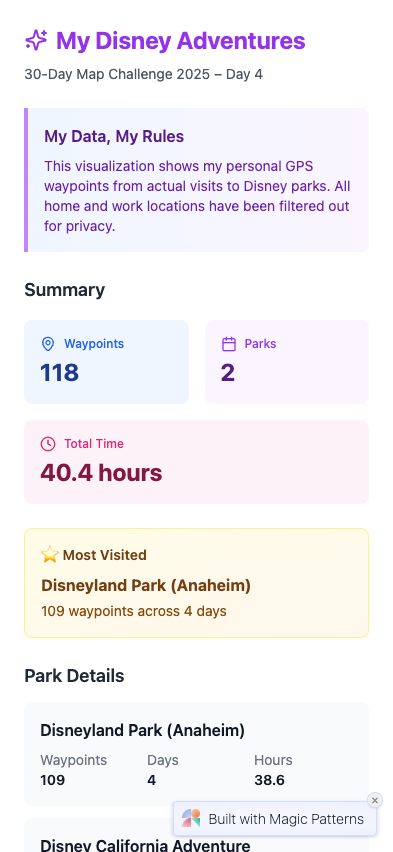
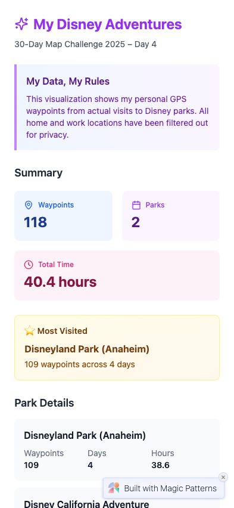

Day 4: My Data
Disney Park Visit Mix (118 GPS waypoints)
Date: November 4–5, 2025 | By: Danny Bauman
Disney Park Visit Mix (118 GPS waypoints)
Date: November 4–5, 2025 | By: Danny Bauman
Platforms Tested
Success (22%)
Partial Success (67%)
Failed (11%)
Time Invested
Day 4 spilled over into Day 5 because I took more time figuring out the idea and dataset before I asked the AI platforms to have at it. Claude, ChatGPT, and Gemini each pitched ideas with privacy-first takes on personal data, which was nice, but most were either abstract or too general. After redirecting them to stay lightweight and not around my home location, I pivoted toward a concept of my trip to Disnelyand!
Cleaned 118 GPS waypoints from my Google Timeline to show how I actually moved through Disneyland and Disney California Adventure.
Grounded in my own dataset while respecting the same privacy guardrails I used during prep.
Cluster every cafe visit into "routine," "exploring," and "traveling" zones after blurring exact locations.
Kept on the backlog as a travel-day follow-up; reminded me to keep future uploads lightweight and anonymized.
Merge run + walk traces into thicker, brighter lines while clipping anything near home or work.
Great safety net if the waypoint map stalled—shows how to publish a line density map without leaking anchors.
Hexbin the GPS archive, then delete the most-visited cells so the "shell" of everyday travel becomes the headline.
A solid fallback if I needed more abstraction—turns privacy deletions into a storytelling focal point.
A point-cloud map of every GPS waypoint I recorded inside Disneyland Park and Disney California Adventure during my September 2025 trip—118 cleaned coordinates showing actual movement paths.
Data source: Google Maps Timeline export processed by `build-disney-park-visits.mjs` (home/work waypoints removed, parks filtered, metadata summarized).
Why chosen: Feels unmistakably "my data," honors the privacy guardrails established during prep, and is packaged as a lightweight GeoJSON that all platforms can load offline.
Most of Nov 4 was spent steering AI while it wrote the Node script that produces the cleaned dataset. My role was defining the constraints; the model handled the plumbing once I described the workflow.
placeVisit and timelinePath entries, and convert each latitudeE7/longitudeE7 pair into decimal degrees.meta.park_summary array so every platform can surface visit counts, unique days, and total hours without extra code.data/disney-park-visits.geojson and a plain-text mirror for platforms that refuse GeoJSON uploads.That extra scripting pass is what pushed Day 4 into Day 5, but it meant every AI platform received the same clean, privacy-safe dataset.
Used the same prompt across all platforms:
Project: 30-Day Map Challenge 2025 – Day 4 "My Data"
Theme: Personal dataset visualization
Context:
I collected my own Google Maps Timeline exports, filtered them to extract all GPS waypoints within Disney parks I've actually visited (currently Anaheim Disneyland parks), removed anything near my home/work locations, and created a point cloud showing my actual movement paths. The cleaned dataset is included with the project as `data/disney-park-visits.geojson`.
Dataset shape (FeatureCollection of 118 points):
Each point represents one GPS waypoint from my actual movement within the parks.
{
"type": "FeatureCollection",
"features": [
{
"type": "Feature",
"geometry": {
"type": "Point",
"coordinates": [ -117.9084221, 33.8075887 ]
},
"properties": {
"id": 1,
"park_id": "dlp-disneyland",
"park_name": "Disneyland Park (Anaheim)",
"visit_date": "2025-09-05",
"start_time": "2025-09-05T17:53:00.000Z",
"end_time": "2025-09-05T17:53:00.000Z",
"duration_hours": 0,
"place_name": null
}
},
… 117 more waypoints …
],
"meta": {
"generated_at": "2025-11-05T20:53:34.906Z",
"total_visits": 118,
"unique_parks": 2,
"park_summary": [
{
"park_id": "dlp-disneyland",
"park_name": "Disneyland Park (Anaheim)",
"visit_count": 109,
"unique_visit_days": 4,
"first_visit": "2025-09-02T19:21:00.000Z",
"last_visit": "2025-09-05T17:53:00.000Z",
"total_hours": 38.57
},
{
"park_id": "dlp-california-adventure",
"park_name": "Disney California Adventure",
"visit_count": 9,
"unique_visit_days": 3,
"first_visit": "2025-09-02T22:17:00.000Z",
"last_visit": "2025-09-04T23:00:00.000Z",
"total_hours": 1.79
}
]
}
}
Goal:
Build a responsive web page that visualizes this GPS waypoint dataset as an interactive map showing my actual movement paths within Disney parks. Use point clustering or heatmap visualization to show density patterns, and display aggregated stats per park.
Must have:
1. Load the GeoJSON directly from `data/disney-park-visits.geojson` (no external APIs).
2. Map (Leaflet or MapLibre GL JS) centered on Disneyland with automatic bounds fitting to all waypoints.
3. Point visualization: Use clustering (e.g., Leaflet.markercluster) or heatmap (e.g., Leaflet.heat) to show density of waypoints. Individual waypoints should be visible when zoomed in.
4. Color-code points by park: Different colors for each park (use `properties.park_id` or `properties.park_name`).
5. Tooltip or popup per waypoint when clicked (showing individual waypoint info):
- Park name (`park_name`)
- Visit date (`visit_date`)
- Time (`start_time` formatted nicely)
- Place name (`place_name` if available)
6. Sidebar or header summary using `meta.park_summary`:
- Total parks visited (`unique_parks`)
- Total waypoints (`total_visits`)
- Most-visited park (from `park_summary`, highest `visit_count`)
- Total hours across all parks (sum of `total_hours` from `park_summary`)
- Per-park breakdown: List each park with visit count, unique days, and total hours
7. "My Data, My Rules" style callout that states the data is personal GPS waypoints, filtered to remove home/work locations, showing actual movement paths within parks.
8. Clean mobile layout (sidebar should stack below the map; clustering/heatmap controls readable under 400 px width).
9. Friendly colour palette that feels on-theme for Disney (think soft blues/purples/golds) while keeping WCAG contrast for text.
10. Plain HTML/CSS/JS (no frameworks other than the mapping library). Keep the codebase simple because multiple AI platforms will iterate on it.
Nice to have (if time permits):
- Toggle between clustering view and individual points view.
- Toggle between color-by-park and color-by-density.
- Show time-based animation (play through waypoints chronologically).
- Highlight waypoints from most-visited park with special styling.
Deliverables:
- `index.html`, `style.css`, `script.js` (or a single HTML file with embedded CSS/JS).
- All assets self-contained so I can zip the folder and re-upload elsewhere.
- Include the GeoJSON file in the same folder as `data/disney-park-visits.geojson`.
- Tested in a modern desktop browser; ensure hover/tap interactions work.
Reminder:
Do not add any new external API calls or analytics. Everything must work completely offline with the bundled GeoJSON file. The GeoJSON file includes 118 individual GPS waypoints, so use clustering or heatmap visualization to handle the density effectively.Two platforms created the Disney waypoint experience without hand-holding.
 Desktop
Desktop

.txt fallback once I added it mid-build.Human QA: Exercised both toggles, compared stats to the script output, and grabbed the extra mobile heatmap capture.

meta.park_summary.Human QA: Verified every waypoint, color-by-park styling, and cluster drill-down before capturing both mobile views.
Six platforms generated useful shells but stumbled on data loading or completeness.
 Desktop
Desktop
 Mobile
Mobile
Unexpected token '<' while fetching the .txt data file.Human QA: Logged the console error, captured the empty deployment, and noted the fix needs more tokens.
 Desktop
Desktop
 Mobile

Mobile

Human QA: Confirmed the full file is available in dev tools; the render loop stops after five features.
.env.local plus a Google Maps key, which adds friction for the next retry.Human QA: Confirmed the waypoints are present in memory but not rendered; logged the styling and deployment notes.
Human QA: Documented the blocked network requests and saved the shell for reference.
 Desktop
Desktop
Human QA: Captured the interrupted outputs and noted the inline data ceiling.
 Desktop
Desktop
 Mobile
Mobile
Human QA: Logged the access friction and the missing map so we can compare with future Gemini releases.
One platform never moved past build errors, even after three auto-fix attempts.
 Desktop
Desktop
Human QA: Captured the dev error screen and noted the retry pattern in LAUNCH-TRACKER.
Day 4 stretched across two days: November 4 was all about ideating, and finding and cleaning my Google Timeline export. Nov 5 was all about the multi-platform launches and documentation. Here is how the work split between my guidance and AI support.
build-disney-park-visits.mjs to extract waypoints, drop sensitive buffers, and write both GeoJSON and .txt formats.maps/04-my-data/data/ and locked down private exports inside private-data/.data/disney-park-visits.geojson locally without external APIs..txt fallback so upload-constrained platforms still had a path..txt variants by hand wherever the platform lacked a direct file slot.docs/..txt copies ready meant every platform had a viable upload path..txt file, everything snapped into place.Day 4 was the first time the challenge spilled into the next day, but it's fine, this has been plenty of AI and maps each day. Finding and prepping the Google Timeline export, double-checking data, and documenting the privacy guardrails took longer than the actual platform runs. Once the dataset felt safe, Lovable and Base44 turned that a clean dataset into a polished experience quickly, But the partials showed where inline data pipelines still fall apart.
The lesson: create a private folder (add to .gitignore), and create a common data processing pipeline to import from the private folder and output to day's normal folder in the git repo, in file formats ready to hand platforms their data on a platter. GeoJSON worked out of the box for Lovable, the .txt mirror saved Bolt.new and Base44. Going forward I'll keep nudging AI tools toward interesting and privacy-respecting storytelling.
This showcase hits the highlights. For the full story, dive into: